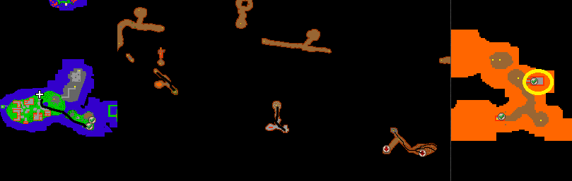
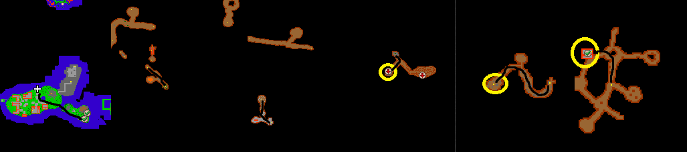
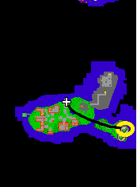

Annihilator
Reward: choose from: Demon armor, stonecutter’s axe, sword of valor or thunder hammer
Recommended level: 300
As you arrive to Drushak, head East, go down the hole and come from the other side. Go Southern hole and follow the path as you eventually come across a maze. Declare yourself as a winner of that puzzle and follow the path and you’ll come across the Annihilator. You can either do this alone if you’re over level 100 or come with a team of 4 players.

Demon helmet, steel boots and demon shield quest
Recommended level: 300
Same place as Annihilator, but head South from that spot. There’s a teleport that gets you to a small room with some demons and banshees. Stone lever is to your right, then you can claim your rewards.

Right horn piece for HOTA
Follow the same path as to Annihilator, but instead of going through the maze, go West. Go to the hole with heroes, follow the path to the North-west, go through the doors and follow the path to the end.

Eagle shield
From Drushak, go East and go to the Northern hole. There’s an Elf NPC. The secret password is ‘Harashaki’. Go to the teleport on your left to enter the quest area with random bosses such as Orshabaals, necropharuses and The old widows.
